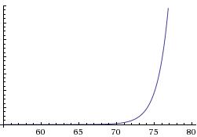

The quick read
Passwords can be thought of as a needle in a haystack. Your password is the needle. Every possible combination your password could be is the haystack. The larger the haystack, the more "entropy" your password has. So, when we say "a password contains 70-bits of entropy", what we're saying is, your password is one of 270 possibilities (a large haystack).
Additional detail
It turns out entropy is a bit more tricky than that. Entropy as defined by Claude Shannon requires two very important principles:
- The result must be chosen from a random function.
- The random function must be uniform (it can't be biased).
If these two goals are met, then we say that the outcome has "maximum entropy". If one or both of those goals are not met, then the entropy is not maximized. In other words, we have fewer possibilities than is possible.
Is this a bad thing? Well, suppose for a moment that your password comes from a haystack of 70-bits of entropy, or 270 total possibilities. Further, suppose a password database has been leaked to the Internet, but all passwords have been protected with some hashing function that can't be reversed. If an attacker tries everything possible to discover your password, and fails, then they will revert to a brute force search.
Brute force searching
Suppose they can try one trillion passwords per second on that leaked hashed password database. They don't need to completely exhaust the search space- they only need to try one-half to have a 50% chance of finding the password. So, instead of trying all of 270 = 1,180,591,620,717,411,303,424 possibilities, they only need to make 269 = 590,295,810,358,705,651,712 guesses at having a 50% chance of finding your password.
At one trillion guesses per second, for 70-bits of entropy, it would take the attacker about 18 years and 9 months to reach that 50% target. This is considered a safe security margin for hashed password databases that are leaked online.


Knowing this, let's look at the entropy selection at the top of the home page. For at attacker to reach 50% possibility that they have found your password, at one trillion guesses per second, it would take: 
- 55-bits: ~ 5 hours.
- 60-bits: ~ 7 days.
- 65-bits: ~ 7 months.
- 70-bits: ~ 19 years.
- 75-bits: ~ 600 years.
- 80-bits: ~ 19 millennia.
As you can see, this follows an exponential curve. Further, you can see that the graph gets nearly vertical very quickly. This is known as the "exponential wall". Eventually, it just gets too expensive for an attacker to make the brute force search successful.
The conclusion
For a targeted offline brute force search, I believe it becomes too difficult and outside the capabilities of a professional password cracker to find your password at 70-bits of entropy.